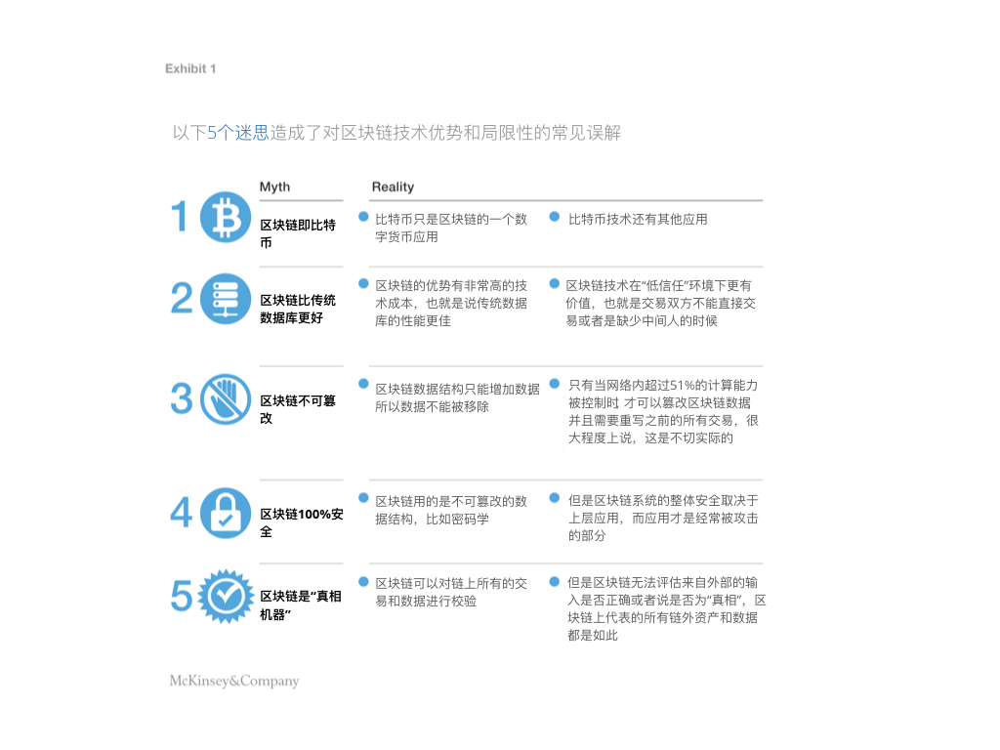
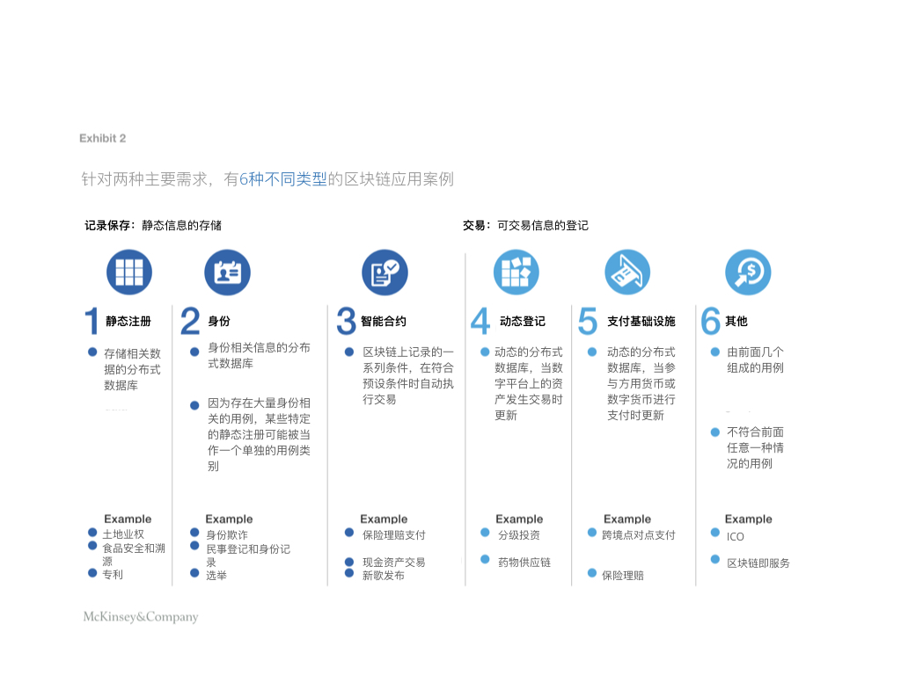
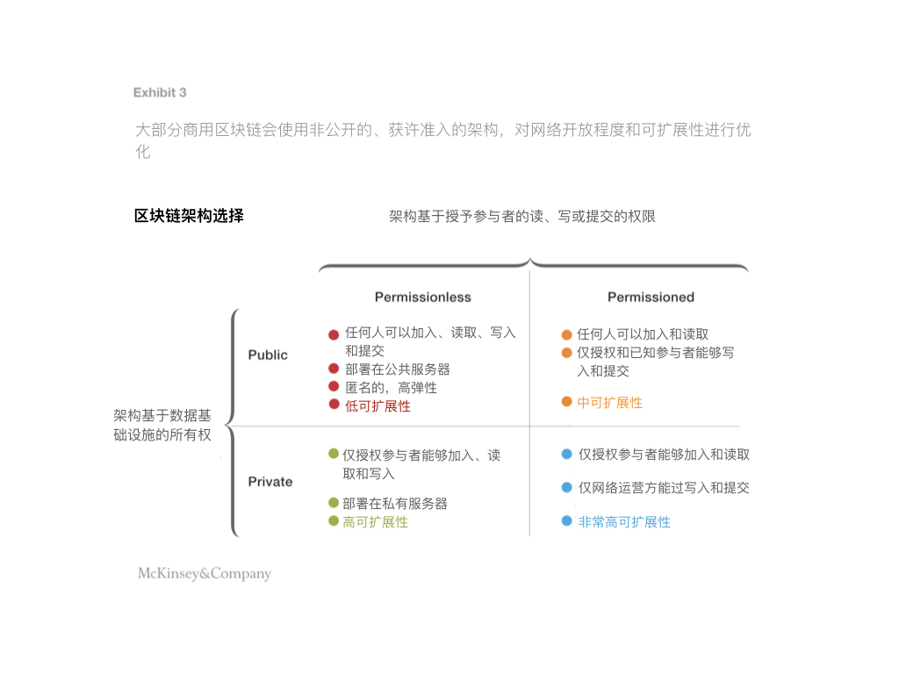
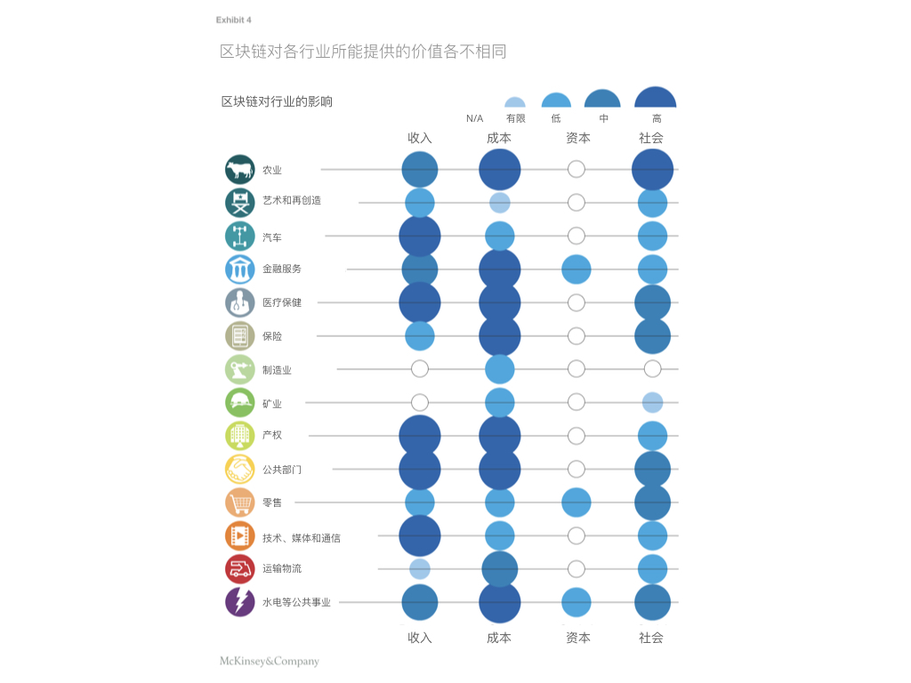
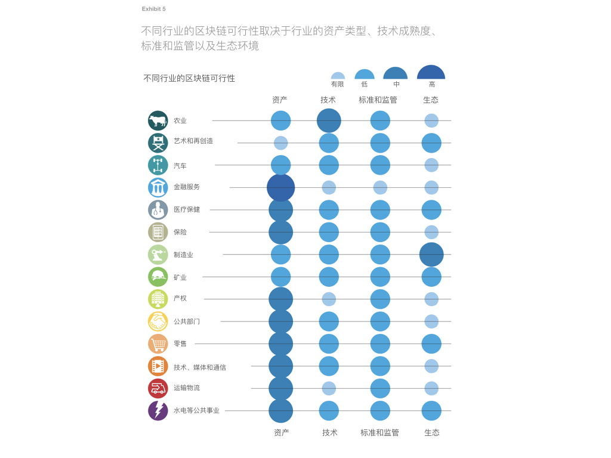
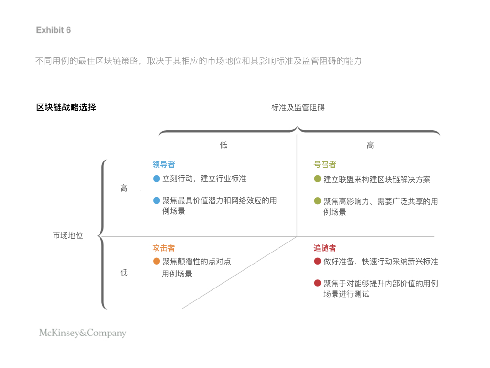

原文地址：https://www.mckinsey.com/business-functions/digital-mckinsey/our-insights/blockchain-beyond-the-hype-what-is-the-strategic-business-value
公司可以通过具体的场景用例及他们所处的市场地位来决定他们是否应该投资区块链。
比特币是第一个区块链应用，同样也是最臭名昭着的一个，因为其价格波动巨大，因此屡上头条，随之而来的各种关于区块链价值的言论也争论不息。2017年间，比特币的市值从不到200亿美元猛增至超过2000亿美元，由此人们将区块链与比特币混为一谈也就不足为奇了。但其实，比特币只是第一个引起了政府和产业关注的区块链应用而已。
区块链是达沃斯的一个高优先级论题；世界经济论坛的一项调查显示，到2027年，全球GDP的10％将储存在区块链中。多个政府已经发布了区块链潜在影响的报告，仅在过去两年就有超过50万份新出版物和370万条谷歌“区块链”搜索结果。
最明显的现象是，大量区块链投资取得进展。区块链初创企业的风险投资资金持续在增长，2017年已经达到10亿美元。ICO是区块链特有的投资模式，出售加密货币的代币成了一种新型投资模式，投资规模火箭般增至50亿美元。领先的技术公司也在大规模投资区块链：IBM斥资2亿美元，投入超过1000名员工在区块链加持的物联网（IoT）领域。
尽管媒体宣传风生水起，但区块链仍然是一项不成熟的技术，市场尚处于萌芽阶段，还未形成明确的成功秘诀。区块链解决方案的非结构化试验没有对风险价值和可行性进行战略评估，这意味着许多公司将看不到投资回报。考虑到这一点，公司要如何确定区块链是否具有战略价值，如何证明其主要投资是正当的？
我们的研究试图通过评估“区块链对主要行业的战略重要性”以及“谁能够通过何种方法来捕获什么类型的价值”来回答这个问题。通过深入的行业分析结合专家和公司的访谈，揭示了主要行业里90多个不同成熟度的区块链用例。
交互说明：用例级别的精细评估，用来确定哪些区块链机会值得追求。此处关于用例的详细评估，建议参考原文。
我们评估并测试了每个用例的影响和可行性，从而更好地理解区块链的整体战略价值以及如何捕获这个价值。
关于区块链战略价值，我们提出了以下三个关键见解：
- 区块链不一定要成为一个去中介化的价值生产者，这将会鼓励更多许可链的商业应用。
- 区块链的短期价值将主要用于降低成本，然后才会是创建颠覆性的商业模式。
- 距离区块链规模化的可行还有三到五年的时间，主要是因为解决建立共同“合作”标准的悖论是个很艰难的过程。
公司应该在其区块链策略中采用以下结构化方法：
-
识别价值：务实而怀疑地对影响和可行性进行精细评估，专注于解决特定行业内特定用例的真实痛点。
-
针对区块链的市场定位量身定制战略方法，并且要考虑到塑造生态系统的能力、制定标准和解决监管障碍等措施，从而获得价值。
通过正确的战略方法，企业可以开始在短期内提取价值。而能够建立区块链作为市场解决方案的优势玩家，现在则应该进行重注投入。
区块链基本要点
现在关于区块链的各种炒作，可能让人们很难锚定事实（图表1）。 区块链是分布式账本或数据库，通过公共或私人计算网络进行共享。网络中的每个计算机节点都持有帐本的副本，因此不会发生单点故障。每条信息都经过加密，并作为新的“区块”添加到历史记录链中。在将其添加到链上之前，其他参与者会使用各种共识协议来验证新区块。这可以防止欺诈或双重花费，并且无需任何中心权威。账本也可以通过“智能合约”进行编程，智能合约是区块链上记录的一系列条件，在符合条件时自动触发交易。比如，智能合约可以用于保险赔付的自动化。

区块链的核心优势是分权（decentralization），密码安全性，透明和不可篡改。 它不必依赖第三方权威就能实现信息验证和价值交换。而要实现特定用例场景的目标和商业需求，可以通过多种方式配置区块链，而不必一定是某种单一形式的区块链。
为了使各种区块链的应用更加清晰，我们将区块链使用案例分为六大类，其中包括两个基本功能：记录保存和交易（图表2）。某些行业有多种不同类型的应用程序，而有些行业则只集中在一到两个类别上。通过该框架本身以及更深入的行业和用例级别的分析，使我们对区块链战略价值的本质和可用性有了重要见解。

关于区块链战略价值的三个核心见解
区块链不一定要成为一个去中介化的价值生产者
现有的机构和多方交易中，如果使用适当的区块链架构，能够获得的好处主要包括：降低交易的复杂度和成本、提升透明度以及控制欺诈。 追逐价值机会的经济诱因会促使在位者利用区块链而不是被区块链赶超。因此，最有可能在短期内取得成功的商业模式是获许准入的区块链（即联盟链），而非公链。像比特币这样的公链，因为没有权威中心，常被看作颠覆性的去中心化的推动力量。而联盟链托管在非公开计算网络上，具有受控的访问和编辑权限（图3）。

私有链和联盟链能够让大小企业开始从区块链的实施中提取商业价值。而占据主导地位的参与方可以保持其权威中心的地位，或者与其他行业的参与者共同获取和分享价值。参与者可以获得安全共享的数据，同时自动控制共享的内容、与谁共享、以及何时共享。
对于所有公司来说，联盟链都可以在商业信任领域挖掘出独特的价值主张，并在扩大规模之前进行小规模实验。目前的使用案例包括：澳大利亚证券交易所为其股票经纪人部署了区块链系统以减少后台对账工作；IBM和世界上最大的航运公司马士基航运公司正在建立一个合资企业，推出区块链交易平台。该平台的目标是为参与全球航运交易的用户和参与者提供安全、即时交易的供应链数据和文书工作。
对于信任记录、身份和交易来说，区块链有可能成为一种新的开放标准协议，这个潜力不可被忽视。区块链技术可以解决每个实体管理、存储和出资数据库的需求。真正的点对点模式在商业上是可行的，因为区块链能够补偿参与者对“代币”（特定于应用程序的加密资产）的贡献，也就是在未来任何价值的增加都会给予他们股份。但是，这种模式所要求的心态转变和商业混乱是巨大的。
如果行业参与者已经调整了他们的运营模式，从区块链中提取大部分价值，并且至关重要的是，将这些好处传递给了他们的消费者，那么留给激进的新进者的机会空间将变得很小。在位者适应和整合区块链技术的程度，长期来看，将成为去中介化规模的决定性因素。
在短期内，区块链的战略价值主要体现在降低成本
区块链可能具有颠覆性的潜力，成为新运营模式的基础，但其最初的影响将会是提高运营效率。通过消除中间人，或者是省却记账和交易核对类的管理工作，可以从现有流程中降低成本。并且通过将损失的旧收入转化为给区块链服务提供商创造的新的收入，改变了价值流。基于对我们对90多个用例的货币影响的量化分析，我们估计，短期内约70％的价值来自于成本降低，其次是创收和资金减免（图表4）。

某些行业的基本功能从本质上来说，其实更适合区块链解决方案，其中以下领域的价值最大：金融服务、政府和医疗。金融服务的核心职能里，“核查并转移财务信息和资产”与区块链最核心最具变革性的能力非常接近。目前的主要痛点，特别是在跨境支付和贸易融资方面的痛点，可以通过基于区块链的解决方案来解决，这些解决方案能过减少必要的中介机构数量，并且无需要求地理位置。可以进一步降低成本的地方在——资本市场的交易后结算和监管报告。 这些价值机会反映在事实上就是，大约90％的澳大利亚、欧洲和北美的主要银行已经在试验或投资区块链。
与银行一样，政府的关键职能——保存记录和验证功能也可以通过区块链基础设施实现，从而节省大量行政开支。公共数据通常是孤立并且不透明的，不论是在政府机构之间还是企业、公民和监管机构之间都是如此。从出生证明到税收数据，基于区块链的记录和智能合约可以简化与公民之间的交互，同时提高数据的安全性。许多公共部门的应用程序（如基于区块链的身份记录），将会成为支持更广泛经济的解决方案和标准的关键所在。 超过25个国家的政府正在积极开展由初创企业支持的区块链试点项目。
在医疗保健领域，要解锁数据在提供商、患者、保险公司和研究人员之间的可用性和交易价值，区块链技术很可能是关键。基于区块链的医疗记录不仅可以促进提升行政效率，还可以让研究人员获得历史的、非患者可识别的数据集，这对医学研究进展至关重要。智能合约可以让患者更好地控制他们的数据，甚至可以将数据访问商业化。例如，患者可以向制药公司收取费用来批准他们接入或使用自己的数据做药物研究。区块链还可以与物联网传感器相结合，以确保药物、血液和器官的冷链（低温储存和分发物流）的完整性。
随着时间的推移，区块链的价值将从降低成本转向实现全新的商业模式和收入流。其中，最有前途和最具变革性的用例之一是创建分布式的、安全的数字身份，不论是消费者的身份还是商业上的KYC（know-your-customer）流程以及与之相关的其他服务。 然而，由于目前可行性的限制，这种新商业模式还需要较长时间才能成为可能。
区块链规模化的可行性可能还需要三到五年时间
区块链的战略价值只有在商业解决方案可以大规模部署时才会实现。我们针对四个决定行业用例可行性的关键因素：标准及法规、技术、资产和生态系统（图表5），对90多个潜在用例进行了评估。尽管许多公司已经在尝试，但由于几个关键原因，有意义的规模化仍需要三到五年的时间。

共同标准至关重要
缺乏共同标准和明晰的规定是现在区块链应用程序能力扩张的主要限制。但是，由于强有力的需求和承担，现在已经开始着手解决这个问题。 如果有一个统治者或是政府机构可以授权法律地位，那么标准可以相对容易地建立起来。 例如，政府可以让区块链记录的土地登记成为合法的记录。
当需要多个参与者之间共同合作时，这个标准的建立就变得更为复杂，但也更加重要。行业联盟已经取得了有力进展，比如R3联盟与全球70多家银行合作开发的金融开源区块链平台Corda。这些平台可以建立起区块链系统所需的通用标准。
全球范围内的监管机构有不同的立场，但大多数是参与而非反对。例如，美国证券交易委员会承认ICO是证券，并且将ICO纳入该机构的监管范围，并成为主流。2017年，澳大利亚标准局代表国际标准化组织，在制定优先级路线图方面发挥领导作用，并帮助建立通用术语，奠定了关键的第一步。到目前为止，许多政府正在采取技术中立的监管方式，而不是推广或禁止区块链等特定技术。
技术必须超前
区块链技术的相对不成熟是其目前生存能力的限制。由于能源消耗和交易速度，区块链应对大规模上不可行的误解是因为混淆了比特币与区块链。实际上，技术配置是一系列的设计选择，其中可以选择速度（块的大小），安全性（共识协议）和存储（公证人数量）的杠杆，使得大多数使用场景在商业上变得可行。例如，爱沙尼亚的健康记录仍处于“脱链”数据库中（意味着不存储在区块链中），但区块链用于识别、连接和监控这些健康记录以及谁可以访问和更改它们。这些权衡意味着区块链性能可能在现阶段对传统数据库并不理想，但随着技术的迅速发展，约束条件正在逐渐减少。
区块链技术的不成熟也增加了切换成本，这个成本对其他所有系统组件来说都是相当可观的。组织需要一个值得信赖的企业解决方案，而在老系统退役之前，大多数成本收益都不会实现。目前，新兴创业公司很少有足够的信誉和技术稳定性，能够满足政府或行业需求的规模化部署。而主流的技术参与者一般都坚定地宣称自己的BaaS服务（blockchain as a service，类似基于云的存储服务模式）能够弥补这部分差距。
资产必须能够被数字化
资产类型决定了是否能够通过区块链来提升记账或交易的可行性，以及是否需要整合其他技术实现端到端的解决方案。 这里的关键因素是资产的数字化潜力，比如原本就数字化记录和交易的股票类资产，就可以轻松在区块链系统上实现端到端的管理，或是通过API与现有系统集成。
但是，将物理产品连接到区块链并确保其安全，则需要启用物联网和生物识别技术。而这个连接很可能成为区块链账本安全中的漏洞，因为虽然区块链记录不可篡改，但实体物品或物联网传感器仍可能被篡改。例如，对诸如谷物或牛奶等商品的监管链条进行认证时，将需要如射频识别这样的标签系统，这将增加提供的担保，但不能绝对保证出处。
竞合悖论必须解决
生态系统的本质是第四个关键因素，因为它定义了用例所需的临界物质是可行的。区块链的主要优势在于网络效应，但是随着网络规模的增加，其潜在收益会增加，协调的复杂性也会随之增加。例如，用于数字媒体、许可证和版税支付的区块链解决方案，就需要在数字内容的各个生产者和消费者之间进行大量的协调。
自然竞争者之间需要合作，所以也正在解决这个竞合悖论的问题，这个悖论是规模化途中最棘手问题。难题不在于确定网络，甚至是初步购买，而是就如何引导和管理系统、数据和投资达成一致的治理决策。克服这个问题通常需要一个带头人，比如由监管机构或产业主体来牵头。此外，还必须让参与者的战略激励措施保持一致，这在高度碎片化的市场中可能尤为艰难。某些行业和应用中，临界物质要少得多，因此在某些情况下，还需要在不同产业之间构建网络实来现物质利益。
公司应该采取什么战略方针？
我们认为可以遵循一种结构化的方法来回答区块链业务战略的经典问题。
在哪里竞争：聚焦具体的、有前景的用例
关于区块链的应用场景不胜枚举，因此公司在决定追求哪些机会时，一般面临艰难的抉择。但是，他们可以秉持务实但怀疑的态度，采用结构化的方法来缩小选择范围。第一步确定给定的用例场景是否具备足够的可用价值。公司只有严格调查真正的痛点——也就是区块链可以消除的客户摩擦，才能避免陷入对不存在的问题给解决方案的陷阱。
识别特定的痛点可以在区块链解决方案整体可行性的约束条件下对潜在商业价值进行细粒度分析。整体行业的特征以及公司的专业知识和能力，将进一步影响这一决策，因为公司需要了解所有组件的细微差别，才能决定哪些用例可以产生稳定的投资回报。如果哪个用例场景连最低的可行性和潜在回报要求都不满足，那公司甚至不必考虑进行区块链策略的第二步。
如何竞争：根据市场定位优化区块链战略
一旦公司识别出了有前景的用例，制定战略时就必须考虑其目标应用场景相关的市场地位。 许多讨论过的可行性因素都在企业的影响范围之内，即便是技术和资本约束也可以通过折衷或一系列设计选择来形成可行的解决方案。因此，公司对区块链的最优战略方法可以通过以下两个市场因素基本确定，这两个市场因素是最不受控制的因素：
-
市场地位——玩家影响应用场景中关键主体的能力
-
标准化和监管障碍——监管批准或标准协调的需求
这两个因素对于确定公司的最佳战略方法至关重要，因为它们对于实现所需的协调是不可或缺的（图表6）。区块链的价值来自于其网络效应和互操作性，各方需要达成共同的标准才能实现这种价值——多个独立区块链与多个独立数据库相比几乎没有什么优势。 随着技术的发展，市场标准终将会浮现，所有对非主导标准的投资最后将被浪费。

对公司市场地位的考量将会告诉我们应该采取这四种区块链战略方法中的哪一种，实际上，它甚至进一步揭示出我们应该首先关注哪类用例。
领导者
领导者应该立即采取行动，保持其市场地位，并抓住机会设定行业标准。如果用例场景需要寻求的协调和监管批准较少，那么作为主导者，他们甚至可以建立市场解决方案。
这类公司面临的最大风险是无所作为，这将导致他们失去增强竞争优势的机会。 例如Change Healthcare就是遵循这一战略的领导者，它是美国最大的独立医疗IT公司之一，它启动了一条企业级医疗区块链，用于索赔处理和支付。
号召者
号召者需要推动形成新标准的对话和联盟，这些标准将打乱他们当前的业务。尽管是占主导地位的公司，但他们也不能单独直接采用区块链，因为它们面临着更严格的监管和标准化障碍。相反，他们可以将自己摆在帮助新区块链标准成形的位置上，并从中获得价值。
号召者策略应该用于高价值用例（如贸易融资），如果没有广泛共享的标准，就无法实现价值。遵循号召者这一战略的例子是丰田，其研究机构与四个全球合作伙伴成立了出行区块链联盟，对汽车的关键提升点：数据共享、点对点交易和基于使用情况的保险等领域提供区块链解决方案。
追随者
追随者也应认真思考并实施适当的区块链策略。大多数公司不具备影响所有必要参与方的能力，特别是当区块链的应用需要较高的标准化或监管审批的时候。这些公司不会不知道市场创新，他们应该关注区块链的发展情况，并做好准备快速采纳新兴标准。 就像为了采用云服务，企业发展出了相应的风险和法律框架一样，同理，他们应该专注制定的战略是如何实施和部署区块链。
考虑到在有些行业中，有可能会挑选出部分参与者来建立一个私人许可的网络，比如货运业，这个时候，追随就是一个特别有风险的区块链战略。 一个追随者，无论你有多快，可能已经被锁定在建立初步概念验证的独家俱乐部之外。要降低这个风险，公司可以提前加入一些现有的和新兴的联盟，只要成为会员的短期投资成本不超过长期被甩开后的损失即可。
攻击者
攻击者往往是市场的新进者，没有市场份额的保护，所以他们必须要寻求具有颠覆性或变革性的商业模式和区块链解决方案。攻击者战略适用于具有最高破坏潜力的应用场景，他们向市场提供的服务能够去除中心化。从金融到保险到资产领域，大多数点对点的应用都属于这一类型。遵循这一策略的攻击者的案例，可以参考澳大利亚的创业公司 PowerLedger，一个针对可再生能源的点对点交易市场，其ICO成功筹集了3400万澳元。
老牌公司应该在其某个单独的非核心数字业务中部署一项攻击者的区块链战略。区块链即服务（BaaS）提供商通常采用攻击者策略，因为它们需要将服务销售给（并破坏）他们目前没有参与的行业。追求攻击者策略的公司往往寻求与市场上占主导地位的公司合作，以发挥后者领导力的影响。
我们的分析表明，除投机炒作之外，区块链对于公司来说仍然具有战略价值，它既能降低成本并且不需要去除中心，同时从长远来看，还能创造新的业务模式。随着当前数字化基础设施不断发展，区块链即服务（BaaS）的产品逐渐成熟，区块链的试验成本随之降低，许多公司现在都在试水区块链。然而，基本的可行性因素决定了什么可以扩张，何时可以扩张，以及验证概念的投资回报什么在时候才可以收回。
以务实并怀疑的态度，来评估区块链扩张的影响和席卷市场的速度，将为我们揭示出正确的战略措施，告诉我们应该在哪里以及如何展开竞争，才能使公司在短期内就能获得价值。事实上，那些能够为行业建立区块链作解决方案的主导者们应该行动起来——立刻行动起来。